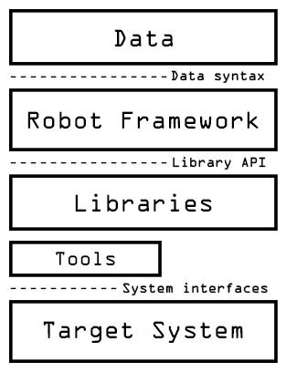

Robot FrameWork
Test Automation
What is Robot Framework?
- Robot Framework is generic open source automation framework.
- Can be used for test automation and robotic process automation(RPA)
- Keyword based human-readable syntax.
- Operating system and application independent.
Bit of History
- The basic ideas for Robot Framework were shaped in Pekka Klärck's masters thesis in 2005.
- The first version was developed at Nokia Networks the same year.
- Version 2.0 was released as open source software June 24.6.2008.
- Yes, this part is from Wikipedia
Robot Framework system
-
Robot Core
- Prosessing of testdata
- Controlling test execution
- Result reporting
-
Test Libraries
- Provaid the actual automation and testing capabilities
- Handle the contact to system under testing

Keywords
The building blocks
Keywords
- Simply, callable function with a it's own twists
-
There are dirrefent ways to utilize keywords.
- Keyword-driven
- Data-driven
- Gherkin
Syntax
*** Settings ***
Resource resource.robot
*** Test Cases ***
Valid Login
Open Browser To Login Page
Input User Credentials demo mode
Submit Credentials
Welcome Page Should Be Open
[Teardown] Close Browser
*** Keywords ***
Input User Credentials
[Arguments] ${username} ${password}
Input Username ${username}
Input Password ${password}